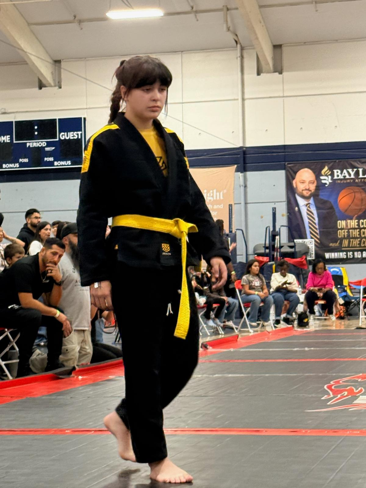

Discipline. Sacrifice.
The Gentle Art

At just 12 years old, Blue Rose Najarro has already built an impressive competition resume through dedication, discipline, and a relentless desire to improve. Training at Zenith Jiu-Jitsu under the guidance of coach Faith Mata Monks, Blue has spent the last five years developing her skills both on and off the mats.
What began as a response to a bullying incident quickly became a passion. Through Brazilian Jiu-Jitsu, Blue discovered confidence, resilience, and a love for competition that continues to drive her forward every day.
Blue continues to train and compete at the highest levels of youth Brazilian Jiu-Jitsu, demonstrating discipline, resilience, and humility every time she steps onto the mats.
Her journey is about more than winning medals. She hopes to inspire other young athletes to pursue their dreams and one day give back to the sport by mentoring and coaching the next generation.
Those who believe in Blue's dream make the journey possible.
Questions, sponsorships, or opportunities? Get in touch with Blue's team.